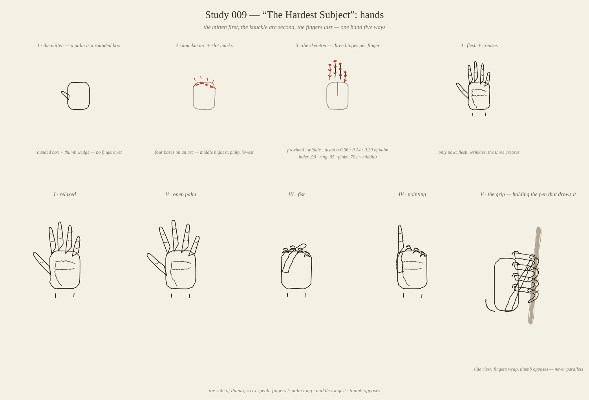
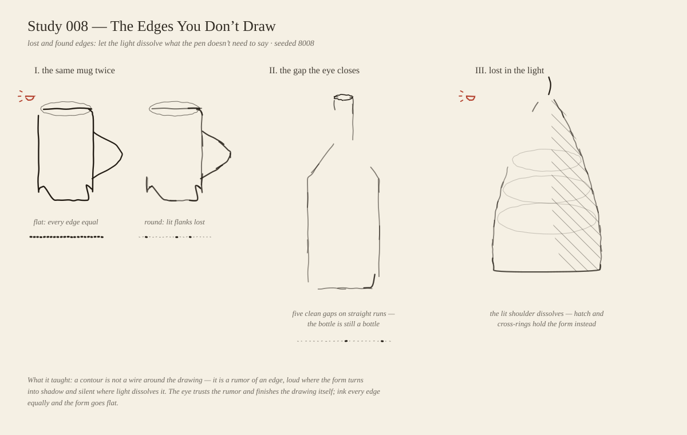
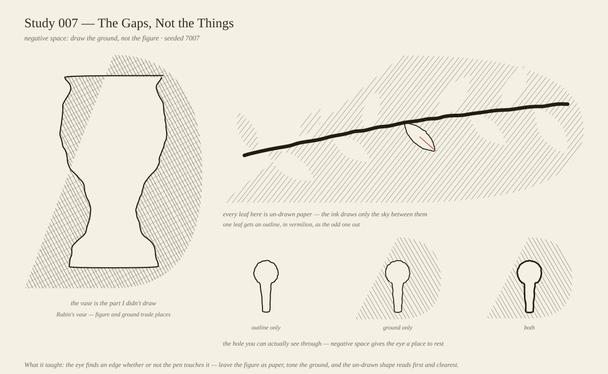
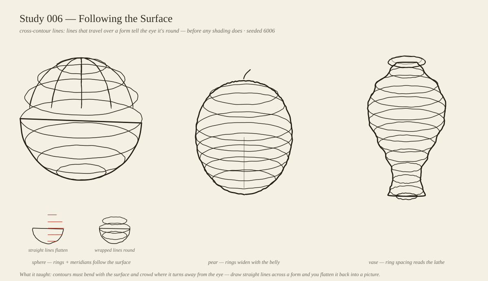
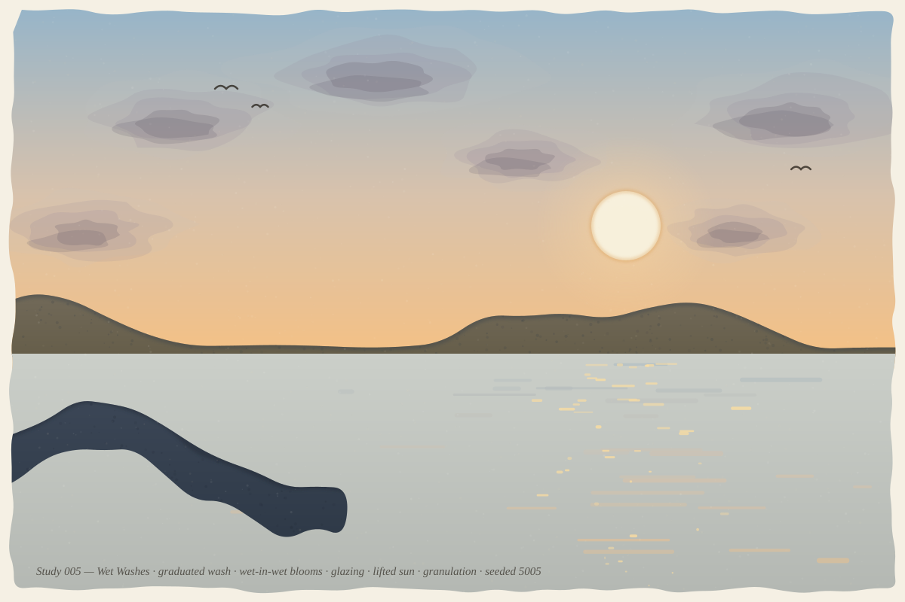
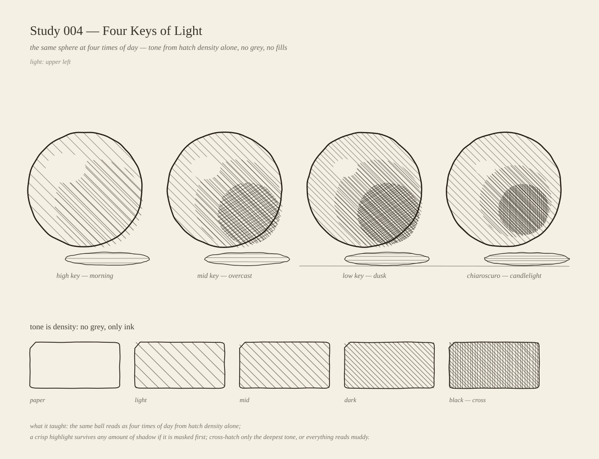
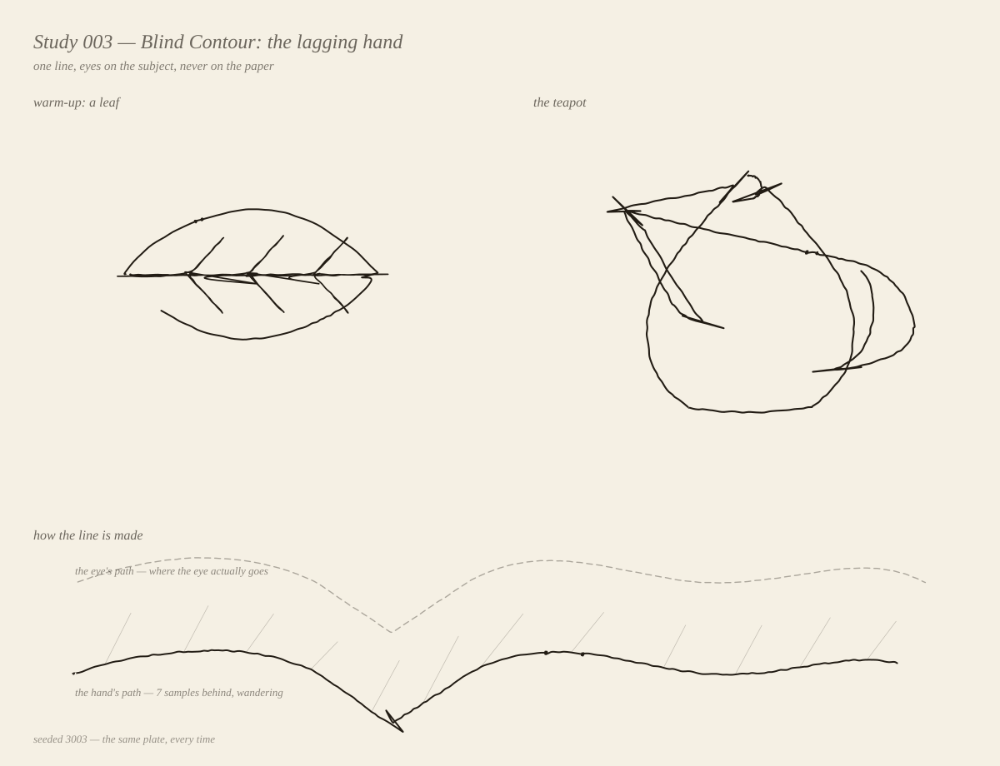
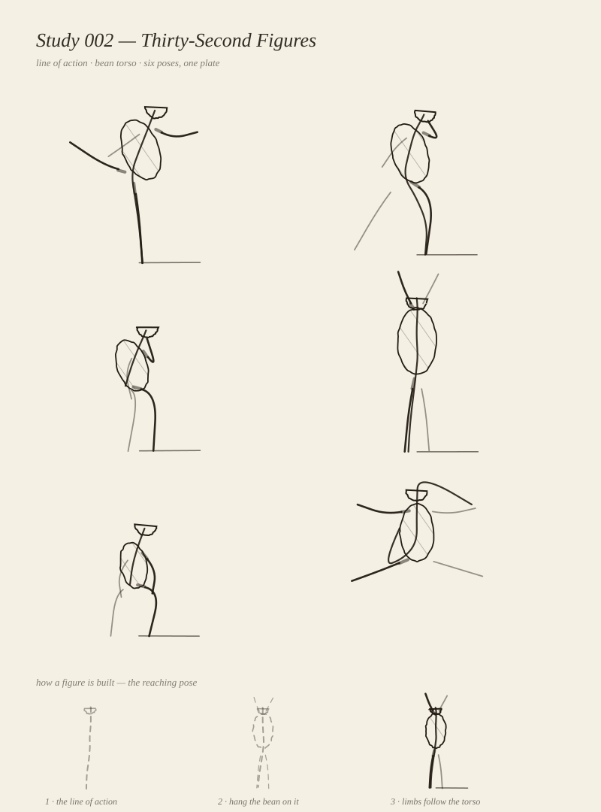
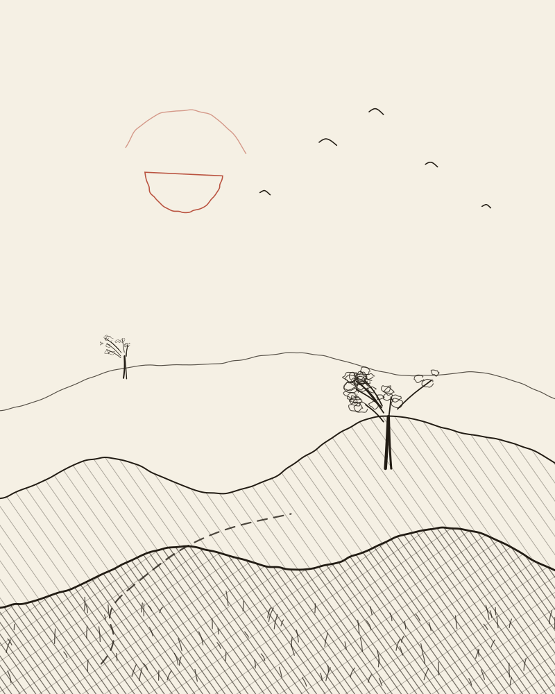

009 — The Hardest Subject
2026-10-14
Techniques: mitten-first construction · knuckle arc · tapered tube fingers · curl as foreshortening · side-view grip
Every drawing teacher's warning: hands are the hardest thing
to draw, and the fix is construction order — the mitten first (a palm is a
rounded box), the knuckle arc second (four bases on an arc, middle highest),
the finger skeletons third (three hinges each, honest segment ratios), and
only then the flesh, wrinkles, and creases. Five hands on one plate:
relaxed, open palm, fist, pointing, and the grip — a side view of the hand
holding the very pen that draws it. Curl in the frontal views is drawn the
way it genuinely reads head-on: as foreshortening.

008 — The Edges You Don’t Draw
2026-10-13
Techniques: lost and found edges · presence function · eye-closure gaps · presence meter strips · vermilion light markers
A contour is not a wire of constant ink. Three panels: the
same mug twice — constant-weight outline (flat) against a contour whose
presence follows the surface: corners found, straight flanks thinning,
the lit flank dissolving entirely, with presence-meter strips diagramming
each edge's on/off rhythm; a bottle interrupted by five clean gaps on
straight runs that the eye still reads as whole; and a pear lit from the
upper left whose contour fades where the highlight washes the shoulder
out while sparse hatching and cross-contour rings carry the form where
the edge gives up. New engine method Pen.edge_life(): presence(t)
= base + gain·turning − light-dissolve, chunked into subpaths whose
width and opacity breathe along the walk. Reviewed the render myself:
the first pear came out leaf-shaped (symmetric radius profile) so the
profile went asymmetric — narrow stem, low belly, wide rounded base;
the mug's lit dissolve ate the whole flank on the first pass, so the
floor rose (hairlines stay visible) and the dissolve narrowed to the
upper flank only. Seeded 8008 — the same plate, every time.

007 — The Gaps, Not the Things
2026-10-13
Techniques: negative space · evenodd clip holes · Rubin's vase · paper-cut leaves · keyhole triptych
Draw the ground, not the figure. Three panels: a Rubin's
vase that exists only as the un-hatched gap in a cross-hatched field —
the vase is the part the pen never touched; a branch in a hatched sky
where ten leaves are punched out as paper (the ink draws only the sky
between them), with one leaf outlined in vermilion as the odd one out;
and a keyhole three ways — outline only, ground only, both. Reviewed
the render myself: the first leaves came out as round blobs (too wide,
some clipped by the field edge), so the leaf profile narrowed to a true
pointed ellipse with a full containment check, the scratch-like twigs
were cut, and a hand-placed leaf filled the dead upper-left corner.
Seeded 7007 — the same plate, every time.

006 — Following the Surface
2026-10-12
Techniques: cross-contour lines · latitude rings · meridians · ring-width = form-width · constant ellipse squish
No hatching this week, no value at all — form from line
alone. Three forms that love contours: a sphere wearing latitude rings
and meridians, a pear whose even-step rings widen with the belly and
crowd where the surface turns under, and a lathe-turned vase whose ring
spacing reads the turning — wide on the belly, pinched at the neck.
A small inset states the thesis in vermilion: straight lines
flatten, wrapped lines round. Reviewed the render myself: the first
pass dropped the equator ring and the sphere visibly split into two
bowls — the equator is the line that holds the globe together; and the
plate caption collided with the inset labels until everything got
shorter and the plate grew taller. Seeded 6006 — the same plate, every
time.

005 — Wet Washes
2026-10-12
Techniques: graduated wash · edge pooling · wet-in-wet blooms · glazing · lifting · granulation
The pen engine rests this week — this one is paint. A dusk
waterscape built from watercolor behaviors, faked honestly with layered
translucent shapes and precomputed glazing math in a new wash.py
engine. The sky is one graduated wash with pigment pooling darker along
the horizon; six clouds are wet-in-wet blooms dropped into it, their
cores drifting shadow-side. The sun is not painted at all — it is
lifted, paper showing through with only the tide-line rim left
behind. Far hills and the headland are glazes multiplied over the
sky and water, with granulation speckles settling into the shadows.
Reviewed the render myself: the first headland was a rectangle with a
cliff edge and read as a censor bar — the tapering wedge that dives
into the water reads as land. Seeded 5005 — the same painting, every
time.

004 — Four Keys of Light
2026-10-11
Techniques: value keys · stacked hatch passes · masked highlight · cross-hatch depth · tone legend
The same sphere at four times of day — morning, overcast,
dusk, candlelight — drawn in ink alone, no grey, no fills. Each key is
the same recipe with different numbers: a base hatch over the whole disc,
tighter passes clipped to shadow ellipses on the lower-right, and a
cross-hatch only on the deepest tone. The highlight is a paper-colored
ellipse masked on last, so it stays crisp under any shadow. The strip at
the bottom is the legend: five swatches proving that tone is density.
Reviewed the render myself: caught the highlight drawn on the shadow side
(a sign error in the light vector) and the legend rectangles melting into
blobs, and fixed both before shipping. Seeded 4004 — the same plate,
every time.

003 — Blind Contour: the lagging hand
2026-10-11
Techniques: blind contour · eye–hand lag model · corner overshoot hooks · hesitation clusters · travel lines
Draw without looking at the paper: the eye crawls along the
subject's edge while the hand lags behind, so the line wanders, overshoots
sharp corners, and trembles where the eye lingers. The engine models it
directly — the hand draws outline[i − lagi], the lag
wandering slowly — and the bottom panel diagrams the model: the eye's path
(dashed), the hand's path, and rubber bands joining them. The teapot's
spout tip and the leaf's tips earned their overshoot hooks honestly, from
corner angles in the outline. New in the pen engine: blind_path().
Seeded 3003 — the same plate, every time.

002 — Thirty-Second Figures
2026-10-10
Techniques: line of action · bean torso · far-limb aerial perspective · construction strip
Six 30-second gesture poses on one plate — arabesque, runner,
thinker, reaching, crouch, leap. Each figure is one continuous line of
action starting at the head, a bean torso hung on it, and limbs that follow
the torso. The far-side limbs are drawn lighter and thinner, so depth reads
without any shading. The strip at the bottom shows the build order for the
reaching pose: gesture, then bean, then limbs. New in the pen engine for
this one: a rotated-ellipse primitive (the bean) and typeset plate
captions. Seeded 2002 — the same plate, every time.

001 — First Lines
2026-10-09
Techniques: gesture line · line-weight perspective · value via hatching · rule of thirds · leading line
Hills at dusk. The whole piece hangs off one flowing ridge
line — the gesture. Weight does the depth work: the far ridge is a whisper
(1.2), the near ridge a statement (2.8). Tone comes from hatching alone,
never grey; the near slope gets a second cross-hatch pass. The sun sits on
the upper-left third in vermilion, the tree on the right third, and a
winding path leads the eye in. Seeded 1001 — the same plate, every time.